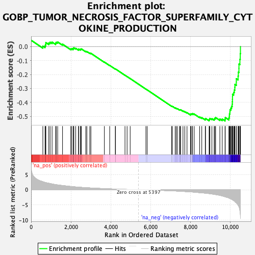
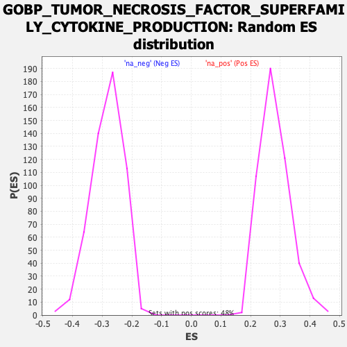

| Dataset | qlf.KOd4vsWTd4_gsea_score |
| Phenotype | NoPhenotypeAvailable |
| Upregulated in class | na_neg |
| GeneSet | GOBP_TUMOR_NECROSIS_FACTOR_SUPERFAMILY_CYTOKINE_PRODUCTION |
| Enrichment Score (ES) | -0.5321726 |
| Normalized Enrichment Score (NES) | -1.8824878 |
| Nominal p-value | 0.0 |
| FDR q-value | 0.026628308 |
| FWER p-Value | 0.573 |

| SYMBOL | RANK IN GENE LIST | RANK METRIC SCORE | RUNNING ES | CORE ENRICHMENT | |
|---|---|---|---|---|---|
| 1 | CD86 | 0 | 8.166 | 0.0449 | No |
| 2 | RARA | 589 | 2.641 | 0.0029 | No |
| 3 | RIPK2 | 699 | 2.424 | 0.0058 | No |
| 4 | MAPKAPK2 | 728 | 2.356 | 0.0160 | No |
| 5 | PTPN11 | 740 | 2.348 | 0.0278 | No |
| 6 | MIF | 887 | 2.145 | 0.0256 | No |
| 7 | IFNG | 953 | 2.064 | 0.0307 | No |
| 8 | TNFRSF8 | 1053 | 1.899 | 0.0316 | No |
| 9 | CD274 | 1230 | 1.700 | 0.0241 | No |
| 10 | PTPN6 | 1261 | 1.665 | 0.0303 | No |
| 11 | TREX1 | 1334 | 1.596 | 0.0322 | No |
| 12 | CYBB | 1577 | 1.393 | 0.0166 | No |
| 13 | TIRAP | 1989 | 1.088 | -0.0169 | No |
| 14 | MAVS | 2038 | 1.050 | -0.0157 | No |
| 15 | AKAP8 | 2111 | 1.004 | -0.0171 | No |
| 16 | FOXP1 | 2116 | 0.999 | -0.0120 | No |
| 17 | DICER1 | 2147 | 0.986 | -0.0095 | No |
| 18 | CYBA | 2238 | 0.930 | -0.0130 | No |
| 19 | AGER | 2378 | 0.862 | -0.0216 | No |
| 20 | PARK7 | 2387 | 0.858 | -0.0177 | No |
| 21 | HDAC2 | 2473 | 0.817 | -0.0213 | No |
| 22 | TRIM27 | 2484 | 0.810 | -0.0178 | No |
| 23 | IFIH1 | 2524 | 0.789 | -0.0172 | No |
| 24 | DHX9 | 2745 | 0.694 | -0.0346 | No |
| 25 | HAVCR2 | 2799 | 0.673 | -0.0359 | No |
| 26 | TICAM1 | 2946 | 0.614 | -0.0466 | No |
| 27 | CACTIN | 3001 | 0.595 | -0.0485 | No |
| 28 | UBE2J1 | 3677 | 0.374 | -0.1113 | No |
| 29 | NFKBIL1 | 3945 | 0.305 | -0.1352 | No |
| 30 | LGALS9 | 4226 | 0.234 | -0.1608 | No |
| 31 | HMGB1 | 4238 | 0.228 | -0.1606 | No |
| 32 | GSTP1 | 4712 | 0.122 | -0.2054 | No |
| 33 | TLR2 | 4818 | 0.103 | -0.2149 | No |
| 34 | FADD | 4973 | 0.075 | -0.2292 | No |
| 35 | LTF | 5762 | -0.059 | -0.3046 | No |
| 36 | PIK3R1 | 5826 | -0.068 | -0.3102 | No |
| 37 | ARHGEF2 | 7056 | -0.343 | -0.4264 | No |
| 38 | TYROBP | 7088 | -0.354 | -0.4274 | No |
| 39 | APP | 7231 | -0.392 | -0.4389 | No |
| 40 | PSEN1 | 7286 | -0.410 | -0.4418 | No |
| 41 | AXL | 7343 | -0.434 | -0.4448 | No |
| 42 | ZC3H12A | 7450 | -0.469 | -0.4524 | No |
| 43 | SPHK2 | 7477 | -0.482 | -0.4522 | No |
| 44 | TNFAIP3 | 7505 | -0.494 | -0.4521 | No |
| 45 | RIPK1 | 7623 | -0.539 | -0.4604 | No |
| 46 | CX3CR1 | 7713 | -0.575 | -0.4658 | No |
| 47 | GPNMB | 7826 | -0.622 | -0.4731 | No |
| 48 | LBP | 8003 | -0.695 | -0.4862 | No |
| 49 | DDT | 8006 | -0.695 | -0.4826 | No |
| 50 | POMC | 8034 | -0.707 | -0.4813 | No |
| 51 | SLAMF1 | 8097 | -0.736 | -0.4832 | No |
| 52 | IL4 | 8102 | -0.738 | -0.4795 | No |
| 53 | GPR18 | 8187 | -0.781 | -0.4833 | No |
| 54 | FOXP3 | 8461 | -0.947 | -0.5043 | No |
| 55 | PYCARD | 8567 | -1.010 | -0.5088 | No |
| 56 | ARFGEF2 | 8741 | -1.113 | -0.5193 | No |
| 57 | CCR2 | 8756 | -1.121 | -0.5145 | No |
| 58 | ZBTB20 | 8935 | -1.261 | -0.5247 | Yes |
| 59 | LY96 | 8954 | -1.277 | -0.5194 | Yes |
| 60 | C1QTNF4 | 8973 | -1.294 | -0.5140 | Yes |
| 61 | ERRFI1 | 9075 | -1.385 | -0.5161 | Yes |
| 62 | ADAM8 | 9188 | -1.511 | -0.5186 | Yes |
| 63 | RASGRP1 | 9220 | -1.545 | -0.5130 | Yes |
| 64 | MYD88 | 9262 | -1.582 | -0.5083 | Yes |
| 65 | BCL10 | 9474 | -1.839 | -0.5184 | Yes |
| 66 | STAT3 | 9593 | -2.028 | -0.5186 | Yes |
| 67 | CD47 | 9735 | -2.292 | -0.5196 | Yes |
| 68 | IL27RA | 9745 | -2.318 | -0.5077 | Yes |
| 69 | IFNGR1 | 9928 | -2.711 | -0.5103 | Yes |
| 70 | OAS3 | 9950 | -2.778 | -0.4971 | Yes |
| 71 | NOD1 | 9955 | -2.788 | -0.4821 | Yes |
| 72 | TMEM106A | 9978 | -2.866 | -0.4685 | Yes |
| 73 | ARRB2 | 9982 | -2.871 | -0.4530 | Yes |
| 74 | SETD4 | 10024 | -2.959 | -0.4407 | Yes |
| 75 | FRMD8 | 10063 | -3.119 | -0.4272 | Yes |
| 76 | PTPRC | 10093 | -3.226 | -0.4123 | Yes |
| 77 | BCL3 | 10100 | -3.255 | -0.3950 | Yes |
| 78 | NLRC3 | 10106 | -3.274 | -0.3775 | Yes |
| 79 | JAK2 | 10109 | -3.287 | -0.3596 | Yes |
| 80 | CD2 | 10111 | -3.303 | -0.3416 | Yes |
| 81 | PTPN22 | 10168 | -3.515 | -0.3276 | Yes |
| 82 | SPN | 10202 | -3.684 | -0.3106 | Yes |
| 83 | OAS2 | 10226 | -3.813 | -0.2918 | Yes |
| 84 | CD84 | 10230 | -3.858 | -0.2709 | Yes |
| 85 | ZFP36 | 10300 | -4.298 | -0.2539 | Yes |
| 86 | TLR1 | 10301 | -4.300 | -0.2303 | Yes |
| 87 | DDX58 | 10390 | -5.031 | -0.2111 | Yes |
| 88 | SASH3 | 10401 | -5.204 | -0.1835 | Yes |
| 89 | ARID5A | 10432 | -5.544 | -0.1559 | Yes |
| 90 | TSPO | 10433 | -5.552 | -0.1254 | Yes |
| 91 | AKAP12 | 10481 | -6.918 | -0.0920 | Yes |
| 92 | ACP5 | 10498 | -7.705 | -0.0512 | Yes |
| 93 | SYT11 | 10508 | -9.472 | -0.0000 | Yes |
